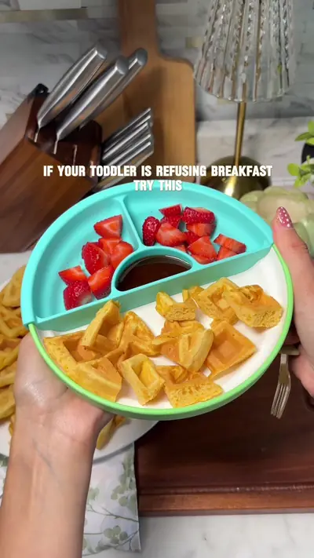

Sweet Potato Waffles

Ingredients
- 1 cup mashed sweet potato
- 2 eggs
- ½ cup whole milk
- ¾ cup all-purpose flour
- 2 tbsp avocado oil or melted butter
- 1 tsp baking powder
- Pinch of cinnamon (optional)
Steps
- Steam or boil the sweet potato until very soft and mash.
- Whisk the eggs, milk, and oil/butter, then mix in the sweet potato.
- Stir in the flour, baking powder, and cinnamon.
- Cook in a lightly greased waffle maker until golden and set
Recipe text as written by @soniamazri on TikTok. Open original